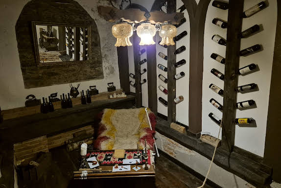


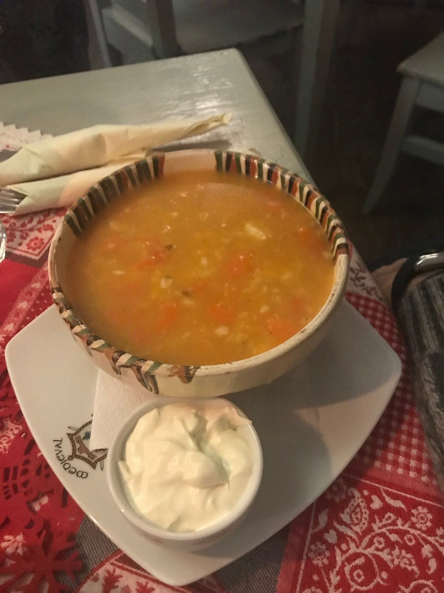

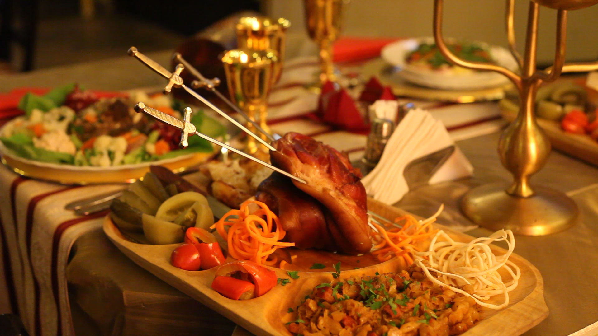
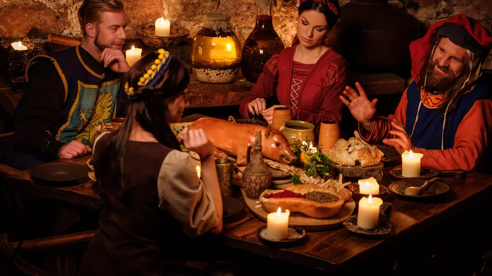
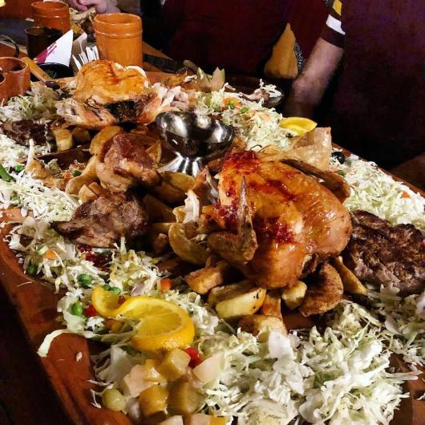
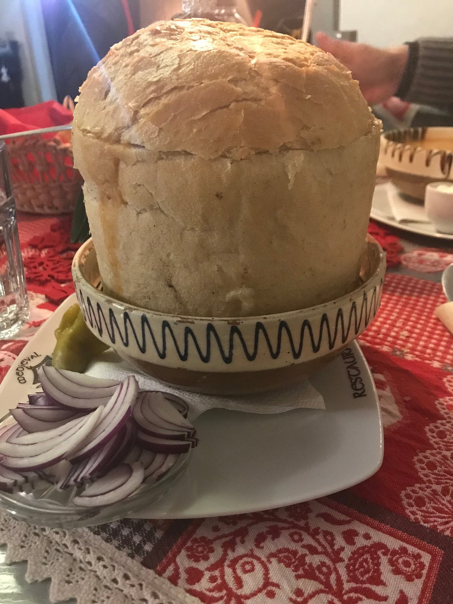
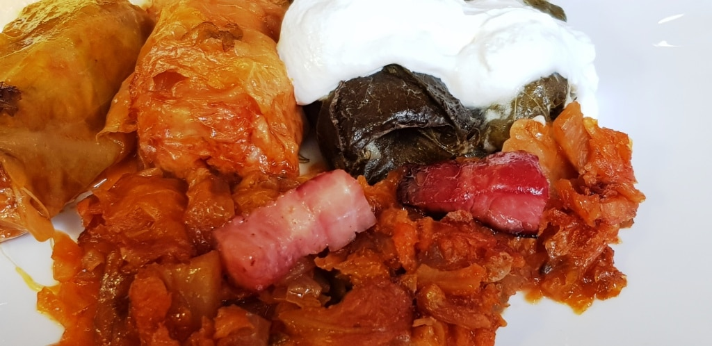
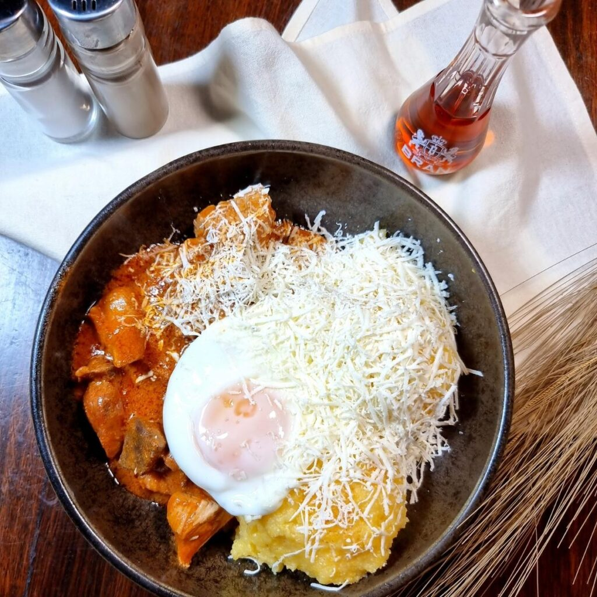
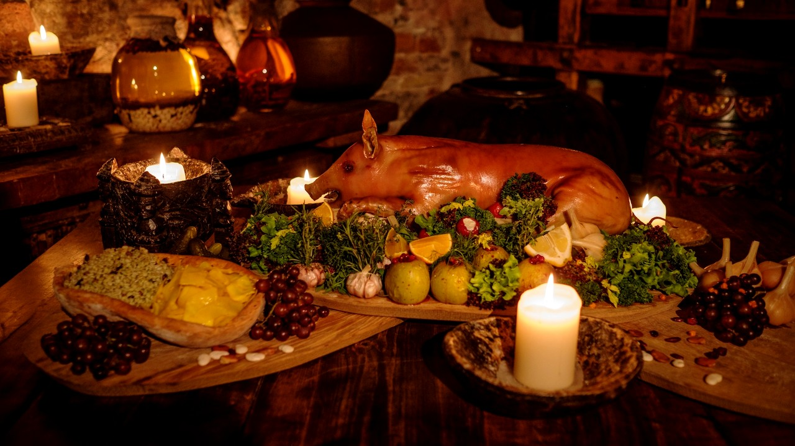


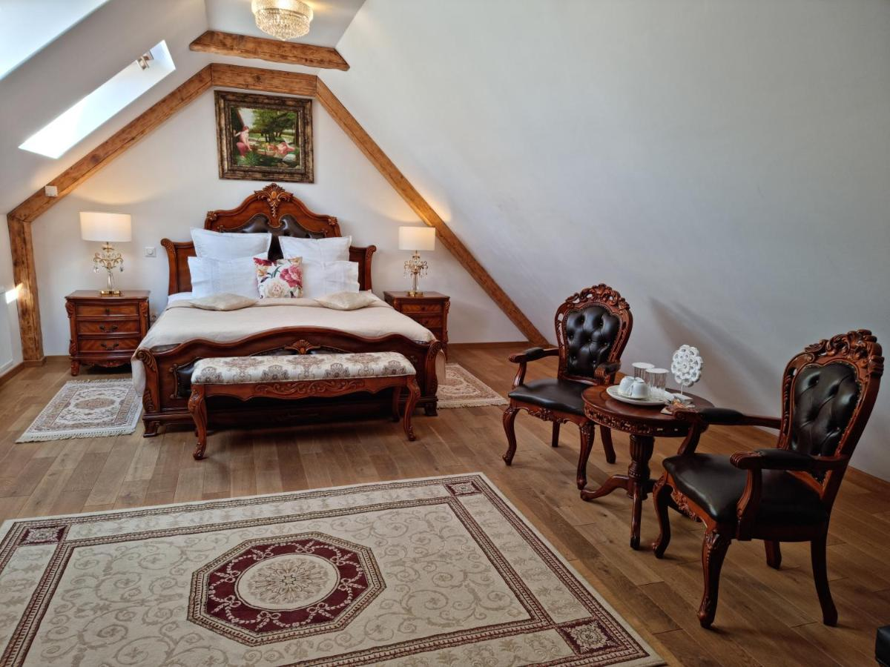
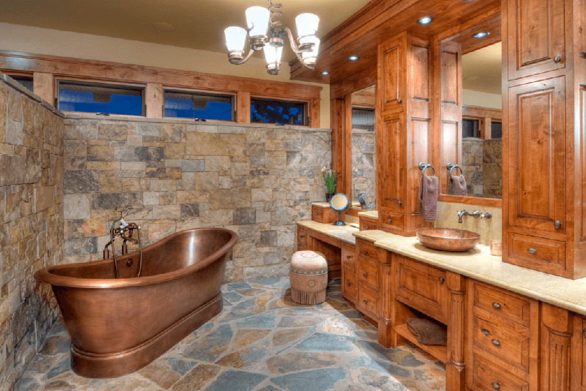
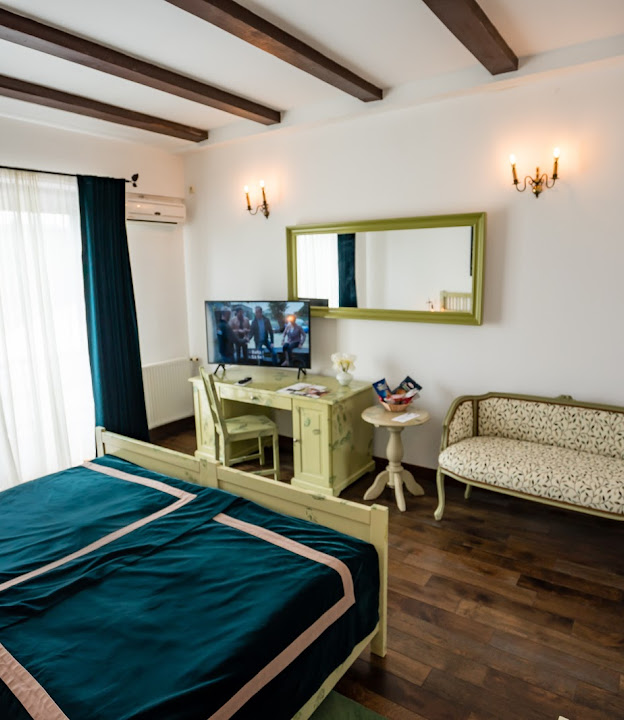
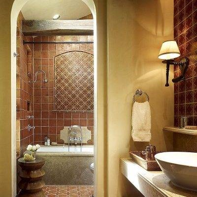
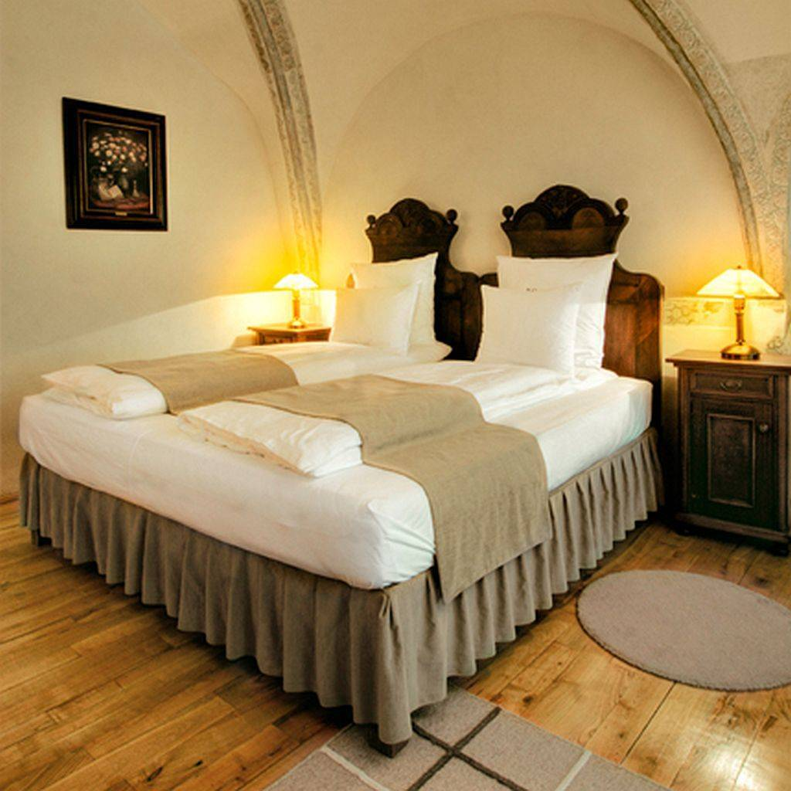
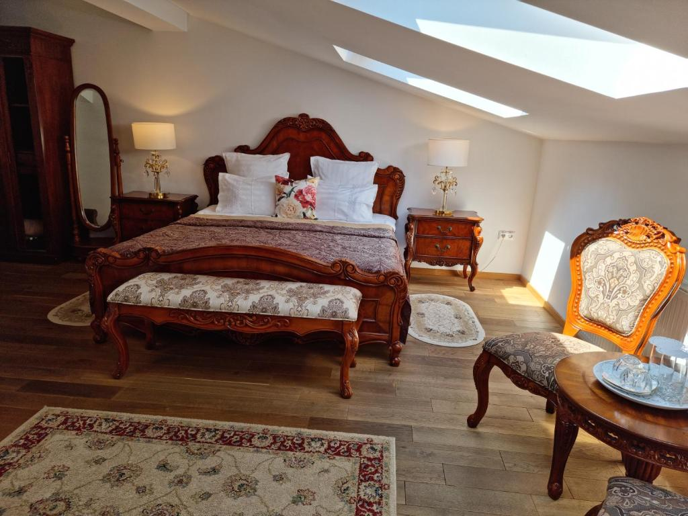

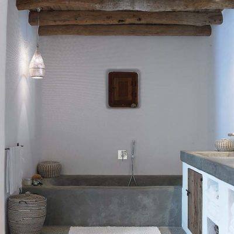
Pensiunea Medieval este amplasată într-un loc de basm, cu o priveliște uluitoare,locul perfect pentru relaxare siconectare cu natura în satul Sucevița. Locația vă îndeamnă să descoperiți savoarea bucatelor naturale traiul
simplu și autentic,departe de grijile și stresul cotidian,în inima Bucovinei.Pe tot cuprinsul județului Suceava,dar mai ales in zona Bucovinei,se pot practica o multitudine de forme de turism: turism itinerant cu valori culturale, turism balnear,
turism rural, ecoturism, turism pentru echitație, pentru sporturile de iarnă, turism de odihnă, recreere și agrement.
Obiectivele turistice care se pot vizita în Sucevița și în împrejurimi sunt : Mănăstirea Sucevița vestită pentru istoria și modul inedit pe care l-a avut în apararea sa în timpul războiului,
zidurile acesteia fiind groase de 3m și dotate cu guri de tragere cu acces printr-un drum continuu de straja, partial reconstituit in zilele noastre, cu o prospețime a paletei de culori deosebit
de variată ,cât și pentru pictura perfect conservată în timp atât la interior cât și pe pereții exteriori, pictura reprezentând comoara cea mai de preț al mănăstirii.
Deasemenea Atelierul artizanal de încondeiat ouă care oferă diferite activităti pentru turiști, Biserica Arătarea Domnului,
Mănastirea Moldovița,Voroneț, Humor,Probota,Arbore,Pătrăuți,Biserica SF. Gheorghe a Mănăstirii Sf Ioan Cel Nou din Suceava.Alte obiective care au scris pagini de istorie ar fi Monument Comemorativ(la intrarea în comuna dinspre Rădăuți),
Casa Iraclie Porumbescu, fost preot ortodox, tatăl marelui compozitor Ciprian Porumbescu, Muzeul Mănăstirii Sucevița,Muzeul Etnografic al școlii Dimitrie Vatamaciuc
din Sucevița.
Alte atracții turistice : portul popular și obiceiurile comunei,cât și sărbători și baluri specifice zonei dar și anotimpurilor.